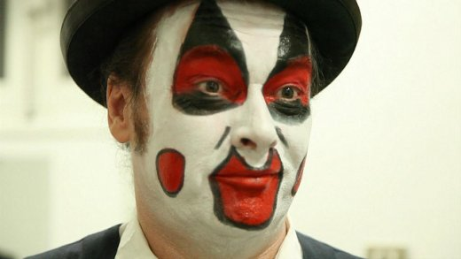

| |
Site dédié à la publication d'informations communiquées par le Collectif des déboulonneurs. En aucun cas ce site n'appelle à des actions illégales. | |
 |
||
|
Accueil du site > Paris > Soirée Cabaret en soutien aux barbouilleurs en procès

Photo de Elena Cabrera Samedi 2 mars 201319h30 Au SHAKIRAIL 72 rue Riquet, 75018 PARIS M° Marx Dormoy (ou La Chapelle, 10 minutes à pied) Soirée Cabaret ! Par les membres du collectif des Déboulonneurs eux-mêmes. En soutien aux Déboulonneurs, le Shakirail, lieu expérimental et artistique, vous reçoit samedi 2 mars 2013, à partir de 19h30. Vous pourrez y manger, y boire et assister à la représentation, le tout dans une belle salle de spectacle. Pour sa deuxième édition, le Cabaret des Déboulonneurs sera placé sous le signe de l’inattendu : Du mentalisme déjanté, de la poésie engagée, de l’improvisation chantée, du théâtre et de la danse entremêlés... des formes inhabituelles se rencontreront dans le cadre d’un cabaret. Retrouvons-nous, laissons-nous emporter, soyons inattentifs ensemble. Et ce n’est pas tout ! Les Déboulonneurs cuisineront eux-même, assistés par les tabliers-volants, un repas mijoté avec amour et révolte. Partout en France, des Collectifs de Déboulonneurs luttent contre le système publicitaire par des actions de désobéissance civile. Six Déboulonneurs du collectif de Paris auront comparu le 25 février 2013 suite à l’action de désobéissance civile non-violente du 28 février 2009, boulevard Rochechouart, à Paris (1). Les 6 militants avaient barbouillé des panneaux publicitaires avec des messages tels que "vitrine du mensonge" ou "violence économique". Cette action avait donné lieu à une garde à vue de 20 heures, et un prélèvement d’empreinte ADN avait été demandé aux militants, prélèvement qu’ils avaient tous refusé. La lutte continue, et notre détermination est inébranlable. Nous espérons partager ensemble cette soirée solidaire, conviviale et onirique... Entrée : prix libre dans l’chapeau ! Pour en savoir plus : www.deboulonneurs.org deboulonneurs.paris[a]no-log.org Vous pouvez aussi envoyer des dons avec la mention “déboulonneurs” à R.A.P, 24 rue de la Chine, 75020 Paris OU en ligne à l’adresse suivante |
|
Site utilisant SPIP - Hébergement Ouvaton
|